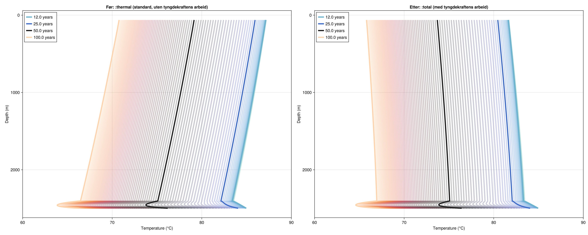

Varme fra dypet: hvor langt fra hverandre skal brønnene stå?
Et geotermisk anlegg med to brønner (en dublett) henter varmt vann fra en sandsteinsone 2400–2500 m under bakken. Der nede er det ca. 85 °C.
Produsenten henter opp varmt vann. På overflaten gir vannet fra seg varmen til fjernvarmenettet.
Injektoren sender det avkjølte vannet ned igjen. Det kommer tilbake fra byggene med 25 °C.
Det kalde vannet brer seg sakte gjennom steinen mot produsenten. Når det kommer fram, blir vannet som hentes opp kaldere. Det kalles termisk gjennombrudd.
Spørsmålet: hvor langt fra hverandre skal brønnene stå nede i bakken?
Ved siden av dubletten ser du en lukket sløyfe: et lukket rør der vannet aldri kommer ut i steinen. Den er med som sammenligning.
Alle tallene kommer fra simulatoren Fimbul.jl (100 år). Kjøringene er regnet ut på forhånd, så figurene svarer med en gang.
1. Velg brønnavstand og vannmengde
Glidebryterne står i boksen til høyre og følger med når du blar.
Avstand: hvor langt fra hverandre brønnene står nede i sandsteinen (oppe på bakken står de bare 100 m fra hverandre). For den lukkede sløyfen er det hvor lange de vannrette rørene er.
Vannmengde: hvor mye vann dubletten pumper opp og sender ned igjen hver time. Den lukkede sløyfen pumper alltid 25 m³ i timen. 300 m³ er 300 000 liter, omtrent 2 000 fulle badekar hver time. Mer vann gir mer varme, men kulden sprer seg også raskere.
2. Temperatur og effekt over tid
Den tykke linjen er avstanden du valgte. De tynne grå linjene er de andre avstandene med samme vannmengde. Den stiplede linjen er gjennombruddet (året står over figuren). Den grå loddrette linjen er året du har valgt med glidebryteren for år.
Effekt er hvor mye varme anlegget leverer per sekund (1 MW = 1 million joule per sekund). Den er størst når vannet som kommer opp, er mye varmere enn vannet som sendes ned.
Til høyre: lukket sløyfe. Her pumpes vannet gjennom et lukket rør: ned til 2400 m, gjennom to vannrette rør i steinen og opp igjen. Vannet kommer aldri ut i steinen, og varmen må ledes inn gjennom rørveggen. Avstanden er nå hvor lange de vannrette rørene er. Sløyfen pumper 25 m³ i timen (ca. 7 kg/s, Fimbuls standard). Det er vanlig for slike anlegg: NREL regner med ca. 6 kg/s for Eavor-Loop 2.0 (Beckers m.fl. 2022), og studier bruker 2–20 kg/s (fra søkesammendrag). Den har ingen kald front og ikke noe gjennombrudd. Lengre rør gir mer varme.
Er anlegget ferdig etter gjennombruddet?
Nei. Gjennombrudd betyr at vannet begynner å bli kaldere. Varmen er ikke borte: se hvor varmt vannet fortsatt er etter 100 år. Hvor kaldt vannet kan bli før anlegget ikke lenger er nyttig, kommer an på hva varmen skal brukes til. Det ser du på i oppgave 4B.
3. Se kulden spre seg år for år
Dra i glidebryteren for år. Kartene og 3D-figurene under viser hvor mye kaldere steinen og vannet i sandsteinen er blitt siden starten (ΔT). Sandfarge betyr ingen endring, mørkeblått betyr mye kaldere (opptil ca. 60 °C).
Kartet ovenfra viser et snitt over hele tykkelsen av sandsteinen (100 m). Til høyre ser du den lukkede sløyfen på samme kart, i laget der rørene ligger (2390–2400 m). Brønnene står på samme sted i begge kartene, så du kan sammenligne direkte. De stiplede linjene er rørene.
I 3D ser du sandsteinen på skrå ovenfra. Halvparten er skåret bort langs linjen mellom brønnene, så du ser inn i laget. Høyden er forstørret ca. 1.6 ganger, så laget (100 m tykt) ikke blir en helt tynn skive. Blå strek = injektor, rød strek = produsent.
Lukket sløyfe i 3D (figuren under): bare steinen innenfor 150 m fra rørene i 2300–2500 m er tatt med, resten er nesten uendret. Foran er steinen over rørene fjernet, så du ser ned på laget rørene ligger i (2390–2400 m). Bak står steinen helt opp, fra like bak det bakerste røret.
4. Oppgaver
A. Et større anlegg
Byen vokser og trenger mer varme. Anlegget skal pumpe 450 m³ vann i timen i stedet for 200 m³.
Sett vannmengden til 200 og avstanden til 1000 m. Når kommer gjennombruddet? Hvor mange MW gir anlegget?
Sett vannmengden til 450. Hva skjer med gjennombruddet hvis brønnene står like langt fra hverandre?
Hvor langt fra hverandre må brønnene stå for at gjennombruddet skal komme omtrent like sent som i oppgave 1?
Prøv det samme med 500 m og 200 m³ i timen. Passer svaret ditt fortsatt?
Tips
Tiden før gjennombruddet avhenger av avstanden ganget med seg selv delt på vannmengden. 450 er 2.25 ganger så mye som 200. Hvilket tall ganget med seg selv blir 2.25?
B. Hvor langt fra hverandre skal brønnene stå?
Etter gjennombruddet blir vannet sakte kaldere. Hvor kaldt det kan bli, kommer an på hva varmen skal brukes til. Brønnene varer heller ikke evig: rørene ruster og det dannes avleiringer, så de fleste brønner må repareres eller bores på nytt innen 30–50 år. Derfor ser vi bare på de første 50 årene, selv om simuleringen går i 100 år.
Lengre avstand betyr lengre brønner, og det koster mer å bore.
Byen trenger mye varme, så anlegget må pumpe 450 m³ i timen. Vannet skal holde seg over 70 °C i minst 50 år. Hvilken avstand bør vi velge for å spare mest penger?
Hva blir svaret hvis det holder med 300 m³ i timen?
Hvor mange MW gir anlegget i oppgave 1 etter 50 år? Og det i oppgave 2?
Eldre bygg med radiatorer kan trenge opptil 80 °C på de kaldeste dagene. Kan dette anlegget varme dem uten hjelp, for eksempel fra en varmepumpe? Se på hvor varmt vannet er på det varmeste.
5. Hva lærte du?
Hva skjer med gjennombruddet når brønnene står nærmere hverandre? Hvorfor?
Mer vann gir mer varme nå. Hva er ulempen?
Er varmen borte etter gjennombruddet? Se på temperaturen etter 100 år.
Lengre avstand gir senere gjennombrudd. Hvorfor setter man ikke bare brønnene veldig langt fra hverandre? (Tips: boring, kostnad og trykk.)
Forenklinger i modellen: sandsteinen er like gjennomtrengelig overalt, det er ingen sprekker, og alt vannet sendes ned igjen. I virkeligheten vet vi lite om steinen mellom brønnene.
6. Kan vi stole på dette?
For lærere og nysgjerrige. En simulering er bare så god som valgene bak den. Mange av valgene er stille standardvalg i eksempelet vi bygget på: de står ikke i teksten, men endrer svaret. Her er kontrollene vi har gjort. Klikk på en kontroll for å åpne den. Hver kontroll sier hva som er sjekket og hva som er antatt.
K1. Stemmer gjennombruddet med en enkel formel?
Wallmeier m.fl. (2025, likning 9) gir tiden før gjennombruddet med en formel: $t = (φ/λ)\,π h L^2 / (3q)$. Her er $L$ avstanden, $q$ vannmengden, $h$ tykkelsen på sandsteinen (100 m) og $φ/λ$ hvor mye varme steinen og vannet holder sammen (ca. 0.71 med Fimbuls verdier). Tiden vokser med avstanden i andre og synker med vannmengden.

| m³/t | Avstand | Formel | Simulering |
|---|---|---|---|
| 200 | 500 m | 11 år | 7 år |
| 200 | 750 m | 24 år | 18 år |
| 200 | 1000 m | 42 år | 37 år |
| 200 | 1250 m | 66 år | 63 år |
| 200 | 1500 m | 95 år | over 100 år |
| 300 | 500 m | 7 år | 4 år |
| 300 | 750 m | 16 år | 11 år |
| 300 | 1000 m | 28 år | 23 år |
| 300 | 1250 m | 44 år | 39 år |
| 300 | 1500 m | 63 år | 65 år |
| 450 | 500 m | 5 år | 3 år |
| 450 | 750 m | 11 år | 7 år |
| 450 | 1000 m | 19 år | 15 år |
| 450 | 1250 m | 29 år | 25 år |
| 450 | 1500 m | 42 år | 41 år |
Sjekket: formelen og simuleringen gir samme størrelsesorden og samme vekst for alle tre vannmengder. Antatt: at simuleringen er litt tidligere ved korte avstander fordi fronten ikke er skarp. Varmeledning smører den ut, så de første gradene kommer før midten av fronten, som formelen regner på.
K2. Holder regelen med avstanden i andre i simuleringen?
Formelen sier at 2.25 ganger mer vann (450 mot 200 m³/t) krever 1.5 ganger avstanden (1.5² = 2.25) for samme gjennombrudd. Vannmengdene i appen er valgt slik at parene finnes på glidebryteren.
| Anlegg 1 | Anlegg 2 | Gjennombrudd | Etter 30 år | Største forskjell |
|---|---|---|---|---|
| 200 m³/t, 500 m | 450 m³/t, 750 m | 7 / 7 år | 65.9 / 66.4 °C | 2.9 °C |
| 200 m³/t, 1000 m | 450 m³/t, 1500 m | 37 / 41 år | 80.9 / 81.8 °C | 1.8 °C |
Sjekket: regelen holder godt for gjennombruddet og omtrent for resten av kurven (høyst ca. 3 °C forskjell over 100 år). Antatt: at forskjellen kommer av at mer vann også henter mer varme fra steinlagene over og under, som formelen ikke tar med.
K3. Er gridet fint nok for dubletten?
Simulatoren deler steinen i små celler (et grid). For å få appen rask nok bruker dubletten et grovere grid enn Fimbuls eksempel. (Den lukkede sløyfen bruker Fimbuls standardgrid, se K3b.) Her er de samme kjøringene med flere celler (300 m³/t, 25 °C).

| Avstand | Grid | Celler | Etter 30 år | Etter 50 år | Etter 100 år |
|---|---|---|---|---|---|
| 500 m | grovt (appen før) | 1540 | 63.0 °C | 56.9 °C | 49.6 °C |
| 500 m | appen nå | 11928 | 60.6 °C | 54.9 °C | 48.0 °C |
| 500 m | Fimbuls standard | 3024 | 72.2 °C | 64.4 °C | 53.9 °C |
| 500 m | ekstra fint | 183456 | 60.3 °C | 54.8 °C | 48.2 °C |
| 750 m | grovt (appen) | 11256 | 71.4 °C | 65.4 °C | 59.1 °C |
| 750 m | Fimbuls standard | 43512 | 71.4 °C | 65.2 °C | 58.5 °C |
| 1000 m | grovt (appen) | 14560 | 79.3 °C | 74.4 °C | 67.0 °C |
| 1000 m | Fimbuls standard | 67144 | 79.3 °C | 73.8 °C | 66.4 °C |
Avvik betyr her forskjellen fra kjøringen med flest celler, som er vårt beste estimat av hva modellen egentlig sier. Det sier ingenting om hvor godt modellen stemmer med virkeligheten.
Sjekket: ved 750 og 1000 m gir det grove gridet nesten samme svar som Fimbuls standard (under 1 °C forskjell). Ved 500 m ga det grove gridet bare 1 540 celler og opptil ca. 3 °C feil, og Fimbuls standardgrid bare ca. 3 000 celler og opptil ca. 12 °C feil, sammenlignet med et ekstra fint grid (ca. 180 000 celler). Appen bruker derfor et finere grid ved 500 m (ca. 12 000 celler, samme nivå som 750 og 1000 m). Det ligger under 0.5 °C fra det ekstra fine.
Antatt: at gridene blir dårlige ved 500 m fordi de bygges ut fra brønnavstanden (se K6). Vi har bare ett finere nivå å sammenligne med, så vi vet ikke sikkert at det ekstra fine gridet er godt nok.
K3b. Er gridet fint nok for den lukkede sløyfen?
Den lukkede sløyfen bruker Fimbuls standardgrid (celler fra 25 m nær rørene til 250 m lenger ut). Her er samme kjøring ved 1000 m med celler som er halvparten så store (12.5–125 m).

| Grid | Celler | År 1 | 30 år | 50 år | 100 år | Effekt 30 år |
|---|---|---|---|---|---|---|
| Fimbuls standard (appen) | 65052 | 41.0 °C | 36.8 °C | 36.3 °C | 35.8 °C | 0.35 MW |
| halvparten så store celler | 271548 | 40.1 °C | 36.5 °C | 36.1 °C | 35.5 °C | 0.342 MW |
Sjekket: største forskjell i temperatur opp er 0.9 °C (det første året), og 0.3 °C eller mindre etter 30 år. Effekten blir ca. 2.5 % lavere med finere grid. Det er lite mot forskjellen fra dubletten (ca. 55 ganger mer effekt), så konklusjonen holder.
Antatt: at det samme gjelder de andre avstandene (bare 1000 m er sjekket). Vi har bare ett finere nivå å sammenligne med.
K4. Stille valg 1: vannet ble varmere på vei opp
I Fimbuls eksempel blir vannet varmere på vei opp i produsenten (ca. 85 °C nede, 87.2 °C på toppen). Det ga ikke mening: vannet stiger gjennom kaldere stein. Årsaken er at simulatoren som standard (energy_formulation = :thermal) ikke tar med arbeidet vannet gjør mot tyngdekraften. Med :total blir vannet kaldere oppover, som det skal.
:thermal (standard) | :total (appen) | |
|---|---|---|
| Toppen, år 1 | 87.2 °C | 81.7 °C |
| Toppen, år 30 | 84.7 °C | 79.2 °C |
| Fall år 1 → 30 | 2.5 °C | 2.5 °C |

Figuren er fra Fimbuls eksempel (injeksjon 20 °C, fint grid). Sjekket: standardvalget gjør vannet ca. 5.5 °C for varmt, men endringen over tid er den samme. Gjennombruddet holder, men energien blir overvurdert. Den lukkede sløyfen bruker også :total.
K5. Stille valg 2: vannet ble sendt ned med 20 °C
Fimbuls eksempel sender vannet ned igjen med 20 °C. Så kaldt blir vannet bare med en varmepumpe (Thisted 12 °C, Sønderborg 15 °C). Uten varmepumpe kommer vannet tilbake fra et lavtemperaturnett med ca. 25–30 °C (IEA, Statkraft 25 °C). Appen bruker derfor 25 °C.
| 20 °C (eksempelet) | 25 °C (appen) | |
|---|---|---|
| Gjennombrudd (300 m³/t) | 5 / 11 / 23 / 39 / 65 år | 5 / 11 / 23 / 39 / 65 år |
| Effekt år 1 | 22.0 MW | 20.2 MW |
Sjekket: gjennombruddet er det samme, men effekten var ca. 8 % for høy med 20 °C.
K6. Begrensninger: dette vet modellen ikke
Modellen blir større med avstanden. Det gjelder begge anleggene. Gridet bygges rundt brønnene, så 500 m-modellen er bare ca. 1.4 × 1 km. (Cellene er gjort mindre ved 500 m, se K3, men området er like lite.) Prøv selv: sett avstanden til 500 m og året til 100. Da når kulden i dubletten kanten av modellen. Sammenligner du avstander, endres altså også hvor mye stein det er rundt brønnene. (Sjekket: størrelse og celletall. Antatt: at det bare påvirker 500 m noe særlig.)
Steinen er lik overalt, uten sprekker og forkastninger. I virkeligheten kan sprekker gi gjennombrudd etter få år (Bauer m.fl. 2019), og lag som ikke henger sammen kan gi flere grader forskjell (Mouche m.fl. 2025). Modellen er derfor trolig for optimistisk.
Brønnene varer ikke i 100 år. I Paris måtte brønnene repareres eller bores på nytt etter ca. 30 år, på grunn av rust og avleiringer, ikke fordi vannet ble for kaldt. Simuleringen går 100 år for å vise at varmen ikke er brukt opp.
Tekst mot kode i eksempelet: dokumentasjonen til Fimbuls eksempel sier 200 år, men koden kjører 100 år (
num_years = 100). Vi har fulgt koden.